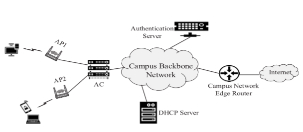
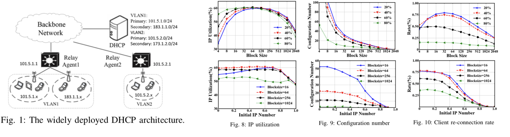
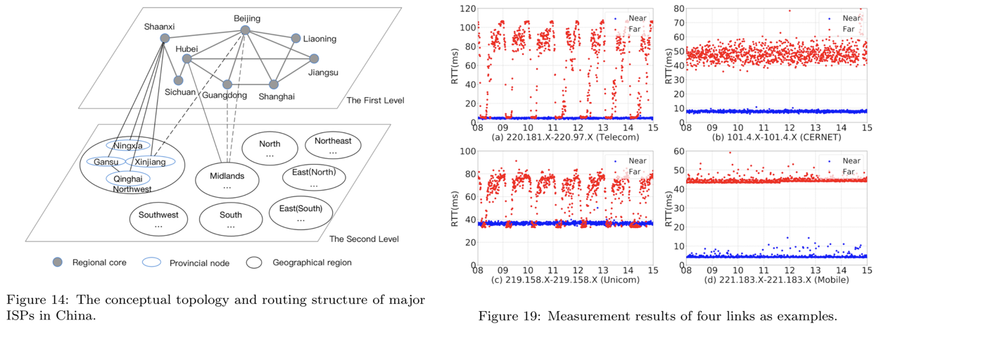
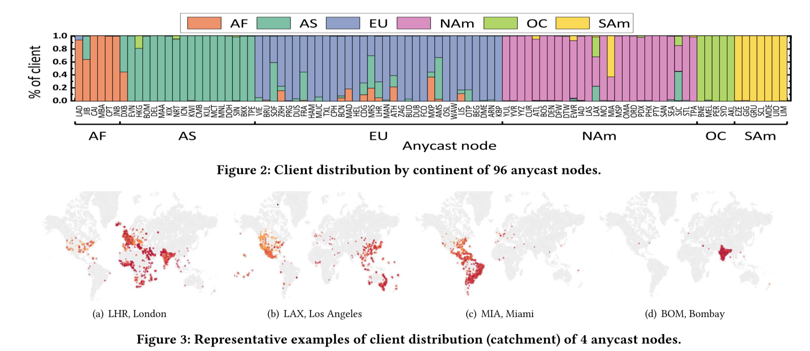

Details of Some Publications
- Resource Scheduling in Distributed Systems
| [TON 2021] | 
Chenghao Rong, Jessie Hui Wang, Juncai Liu, Jilong Wang, Fenghua Li, and Xiaolei Huang, "Scheduling Massive Camera Streams to Optimize Large-scale Live Video Analytics," IEEE/ACM Transactions on Networking. (minor revision.) paper In smart cities, a city deploys an infrastructure and departments submit requests to access and analyze videos for their own purposes. The live analytics of massive streams is computation-intensive and the tasks might be latency-critical, which makes scheduling massive streams to optimize all tasks an essential and challenging work. We exploit an end-edge-cloud architecture and propose an adaptive system to schedule the massive camera streams and tasks, which considers all factors affecting the computation and networking resource consumption, e.g., sharing of model computation, video quality, model partition, and task placement. Particularly, the resource consumption of Faster R-CNN + ResNet101 under each partition scheme is profiled for the first time and we notice the partition must be used together with lossless compression techniques to be beneficial. Furthermore, sometimes tasks might be required to migrate because the scheduling decision made by the system changes to adapt to the changing resource supply and demand. In order to avoid the performance degradation during migration, we propose a nondestructive migration scheme and implement it in the system. Simulations demonstrate our system achieves a total utility close to the maximum and our analytics system performs better than state-of-the-art solutions. |
| [CN 2021] | 
Juncai Liu, Jessie Hui Wang, Chenghao Rong, Yuedong Xu, Tao Yu, and Jilong Wang, "FedPA: an Adaptively Partial Model Aggregation Strategy in Federated Learning," Computer Networks. Paper [@ScienceDirect] Federated Learning has sparked increasing interest as a promising approach to utilize large amounts of data stored on network edge devices. In Federated Averaging, the server keeps waiting for client models to compute the global model in each round unless all client models are received or a pre-configured timer expires, therefore it suffers seriously from participant devices with weak computation and/or communication capability, which is a kind of straggler problem. In this paper we design FedPA, a framework based on partial model aggregation strategy, in which the server waits for only an appropriate number of device models (referred to as aggregation number) in each round. Our experiment shows that the accuracy loss of the aggregated global model in a single round is not significant if the aggregation number is decided carefully. We propose a waiting strategy to determine the aggregation number for each round dynamically and the aggregation number is adaptive to achieve a tradeoff between single-round training time and the expected number of rounds to reach the target accuracy. Stale models are also included during aggregation when they arrive, and their positive value and negative effect are carefully evaluated and reflected in the aggregation strategy. Experiments show that FedPA outperforms the baseline strategy FedAvg and other three algorithms named FedAsync, FLANP and AD-SG. It can work well in all scenarios with different distributions of data samples (characterized by non-IID ratio) and computation/communication capability (characterized by level of heterogeneity) among devices. Experiments also show that FedPA is robust when a certain amount of noise is added into the input from clients for privacy concerns. |
| [TON 2019] | |
| [TON 2019] | Yuedong Xu, Zhujun Xiao, Tianyu Ni, Jessie Hui Wang, Xin Wang and Eitan Altman, "On The Robustness of Price-Anticipating Kelly Mechanism," IEEE/ACM Transactions on Networking, vol. 27, no. 4, pp. 1558-1571, Aug. 2019. [paper] [@IEEE] The price-anticipating Kelly mechanism (PAKM) is one of the most extensively used strategies to allocate divisible resources for strategic users in communication networks and computing systems. The users are deemed as selfish and also benign, each of which maximizes his individual utility of the allocated resources minus his payment to the network operator. However, in many applications a user can use his payment to reduce the utilities of his opponents, thus playing a misbehaving role. It remains mysterious to what extent the misbehaving user can damage or influence the performance of benign users and the network operator. In this work, we formulate a non-cooperative game consisting of a finite amount of benign users and one misbehaving user. The network operator allocates resources to all the users via the price-anticipating Kelly mechanism. We present six important performance metrics with regard to the total utility and the total net utility of benign users, and the revenue of network operator under three different scenarios: with and without the misbehaving user, and the maximum. We quantify the robustness of PAKM against the misbehaving actions by deriving the upper and lower bounds of these metrics. With new approaches, all the theoretical bounds are applicable to an arbitrary population of benign users. Our study reveals two important insights: i) the performance bounds are very sensitive to the misbehaving user’s willingness to pay at certain ranges; ii) the network operator acquires more revenues in the presence of the misbehaving user which might disincentivize his countermeasures against the misbehaving actions. |
| [TON 2018] | 
Jianping Weng, Jessie Hui Wang, Jiahai Yang, and Yang Yang, "Root Cause Analysis of Anomalies of Multitier Services in Public Clouds," IEEE/ACM Transactions on Networking, vol. 26, no. 4, pp. 1646-1659, 2018. paper Anomalies of multitier services of one tenant running in cloud platform can be caused by the tenant’s own components or performance interference from other tenants. If the performance of a multitier service degrades, we need to find out the root causes precisely to recover the service as soon as possible. In this paper, we argue that the cloud providers are in a better position than the tenants to solve this problem, and the solution should be non-intrusive to tenants’ services or applications. Based on these two considerations, we propose a solution for cloud providers to help tenants to localize root causes of any anomaly. With the help of our solution, cloud operators can find out root causes of any anomaly no matter the root causes are in the same tenant as the anomaly or from other tenants. Particularly, we elaborate a non-intrusive method to capture the dependency relationships of components, which improves the feasibility. During localization, we exploit measurement data of both application layer and underlay infrastructure, and our two-step localization algorithm also includes a random walk procedure to model anomaly propagation probability. These techniques improve the accuracy of our root causes localization. Our small-scale realworld experiments and large-scale simulation experiments show a 15%–71% improvement in mean average precision compared with the current methods in different scenarios. |
- Network Management (Campus Network)
| [TON 2020] |

Haibo Wang, Jessie Hui Wang, Jilong Wang, Weizhen Dang, Jing'an Xue, Fenghua Li and Jinzhe Shan, "Squeezing the Gap: An Empirical Study on DHCP Performance in a Large-Scale Wireless Network," IEEE/ACM Transactions on Networking, vol. 28, no. 2, pp. 832 - 845, April 2020. [@IEEE] Dynamic Host Configuration Protocol (DHCP) is widely used to dynamically assign IP addresses to users. However, due to little knowledge on the behavior and performance of DHCP, it is challenging to configure lease time and divide IP addresses for address pools properly in large-scale wireless networks. In this paper, we conduct the largest known measurement on the behavior and performance of DHCP in the wireless network of T University (TWLAN). We find the performance of DHCP is far from satisfactory: (1) The non-authenticated devices lead to a waste of 25% of addresses at the rush hour. (2) Address pool utilization varies greatly under the current address division strategy. (3) A device does not generate traffic for 67% of the lease time on average. Meanwhile, we observe devices of different locations and operating systems show diverse online patterns. To address the problems, taking account of authentication information and online patterns, we propose a new leasing strategy. The results show it outperforms three state-of-the-art baselines and reduces the number of assigned addresses by 24% and the average total lease time by 17% without significantly increasing the DHCP server load. Besides, we further propose an adaptive address division strategy to balance the address utilization of pools. |
| [ICNP 2019] | 
Congcong Miao, Jilong Wang, Tianying Ji, Hui Wang , Chao Xu, Fenghua Li, Fengyuan Ren," BDAC: A Behavior-aware Dynamic Adaptive Configuration on DHCP in Wireless LANs," ICNP 2019. paper DHCP is widely used to dynamically allocate IP addresses to the devices on local area networks, but the explosive increases of WiFi devices and their frequent mobility pose great challenges on DHCP performance in wireless LANs. In this paper, by analyzing large scale real network traces, we observe that the dynamic WiFi user behavior (e.g., online time pattern and spatio-temporal mobility pattern) leads to the poor DHCP performance. The IP pools in some VLANs have been exhausted in rush hours although the total IP utilization in WLAN is only 24%. Therefore, we have to configure IP lease times and IP pools dynamically and make sure that they are adaptive to the WiFi user behavior. In order to achieve this goal, we characterize and model the user behavior across online time pattern and spatio- temporal mobility pattern. Then we propose BDAC, a behavior- aware dynamic adaptive configuration, which is combined of two strategies: adaptive IP lease time configuration and dynamic IP pool configuration. The former is to set adaptive lease times across user roles and area types based on online time pattern to reclaim IP addresses in time and reduce the peak IP usage, while the latter dynamically migrates the IP addresses across VLANs based on spatio-temporal mobility correlation to save the IP addresses. Using the real network traces of a different week, we conduct experiments to evaluate the performance of BDAC. Results show that BDAC can save up to 60% of IP addresses and the actual IP utilization rises from 24% to 59%. Furthermore, BDAC maintains high IP utilization when the number of VLANs in a WLAN increases. |
- Internet Performance
| [CN 2020] | 
Shuying Zhuang, Jessie Hui Wang, Pei Zhang , Jilong Wang , "Understanding the latency to visit websites in China: an infrastructure perspective," CN 2020, Volume 169, 14 March 2020. paper As the Internet becomes more and more widely used in our daily life, its latency has been regarded as a truly critical issue for various Internet applications. Researchers propose an ambitious goal to pursue “Speed-of-Light Internet”. However, there is a large gap between the reality and the goal, and a lot of infrastructure inefficiency caused by simple issues has been observed in some developing or rural regions. In this article, we conduct a measurement study on the latency to visit more than 638K websites in China from five well-connected vantage points, and examine the unnecessary latency caused by the inefficiency of DNS infrastructure and Internet routing infrastructure in China. We find that DNS resolution is the most significant contributor to the overall latency and investigate several important factors that affect DNS latency, i.e., caching, CNAME and delegation. In terms of Internet routing infrastructure in China, we observe that 1) the inter-domain routing in China relies too heavily on the three oldest IXPs while the newly deployed IXPs are under-used significantly, which results in unnecessary routing circuitousness; and 2) most congested links are the links connecting cities with IXPs and these links should be upgraded or utilized with more efficient traffic engineering systems. Furthermore, in order to compute circuitousness ratios and locate congested links, we also propose a method to geolocate IP addresses in China more accurately and we make the geolocation results for IP addresses under the study of this work publicly accessible to facilitate future research efforts. |
| [IWQoS 2019] | 
JingAn Xue, Weizhen Dang, Haibo Wang, Jilong Wang, Jessie Hui Wang, "Evaluating Performance and Inefficient Routing of an Anycast CDN," IWQoS 2019. paper Anycast has been increasingly deployed for content delivery networks to map clients to their nearby replicas, which relies on the underlying routing. However, the simplicity of operation comes at cost of less precise client-mapping control. Although many works have measured anycast DNS, anycast CDNs, with different service goals and engineering, are still not fully understood. In this paper, we design novel methods and combine large-scale traceroute and HTTP measurement to evaluate the overall client-proximity and inefficient routing of the largest anycast CDN, Cloudflare. We find that 90% paths traverse only 2-4 ASes, which highlights its direct networks providers. By further identifying and characterizing direct providers at finer granularity of facilities, we quantitatively shows that Cloudflare unevenly uses few large transit providers to delivery the majority of contents. Inspired by the observations, we propose an anycast routing pathology and diagnosis methodology. Investigation reveals that few huge providers have outsized impact in that they are not only related to many inter-domain inflations, but also have path inflation inside their own networks, thus deserving priority focus when troubleshooting. |